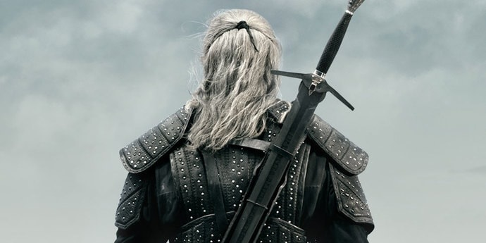
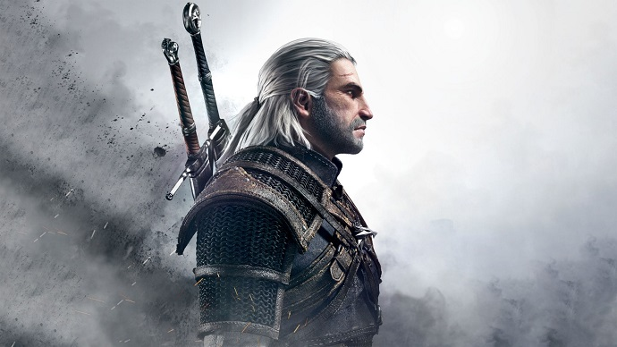

Посмотрим сможите ли вы угадать этого персонажа по затылку?
Как многие из вас могли догадаться, это Ведьмак убийца чудовищ с мечом наперевес. По другому его еще называют Геральт из Ривии. Геральт охотник на чудовищ, который провел большую часть своей в несколько раз превыщающей длинну человеческой жизнь выполняя разнообразные заказы на монстров, пытаясь заработать денег себе на проживание и снаряжение. Как и все ведьмаки, Геральт обладает мутациями, которые делают его быстрым, выносливым, устойчивым к ядам, позволяют видеть в темноте и частично использовать магию.
А теперь несколько интересных фактов о Ведьмаке:
- Геральт, как и все ведьмаки, пользуеться 2 мечами, один серебрянный против монстров, и второй стальной против людей.
- Белый Волк, Мясник из Блавикена, Белоголовый, Выродок, Колдун – все это прозвища странствующего ведьмака, Геральта из Ривии.
- Геральт - сильнейший фехтовальщик севера. Фактически он проиграл лишь дважды: Вильгефорцу и Лето из Гульты. Однако, в обоих случаях в финальных схватках он побеждает.
- Все жители мира Ведьмака знают Геральта из Ривии. Но откуда они его знают? Всему виною людская молва. Истинная слава к нему пришла после событий в Блавикене, где наш герой крайне жестоко и безжалостно расправился с несколькими людьми, устроив настоящую резню на главной площади. Именно тогда он получил прозвище - мясник из Блавикена. Люди видели только то, как беловолосый одни за другим убивает людей, а не тот факт, что при этом он спас жизнь всему городу.